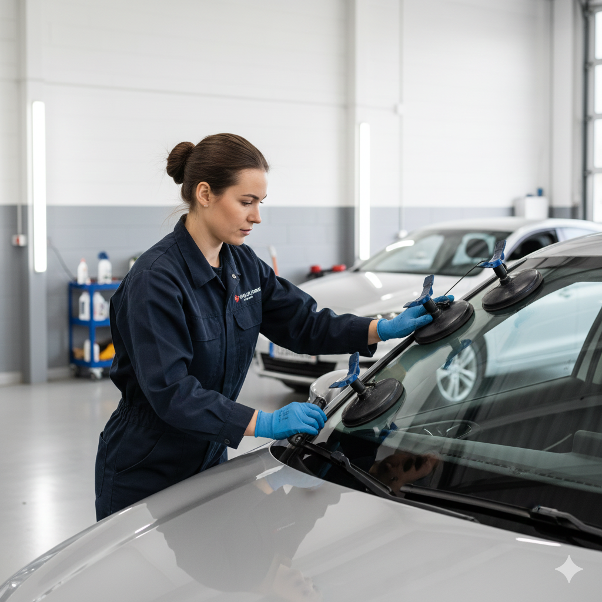

Introduction
If you are searching for professional front windshield installation Doha drivers trust, you already know that a cracked or shattered windscreen is not just a cosmetic problem — it is a safety and structural issue. Your front windshield supports roof rigidity, helps airbags deploy correctly, and is your primary barrier against sand, debris, and the intense glare of Qatar sun. Whether a stone chip on Salwa Road grew into a full crack overnight, or heat stress finally split an older screen, replacing the glass correctly matters as much as replacing it quickly.
At Dohar Car Repair, we provide complete auto glass Doha services: assessment, OEM-quality glass sourcing, precision removal of damaged screens, urethane bonding, proper curing in Qatar conditions, and ADAS camera recalibration when your vehicle requires it. This guide explains why windshield work is especially important in Doha, what causes damage locally, warning signs that mean replacement — not just repair — is needed, how professionals install a new screen step by step, realistic costs in QAR, and why thousands of Qatar motorists choose our workshop for car windscreen replacement Qatar needs.

Why This Service Matters
Modern laminated front windshields are engineered as structural components, not simple panes of glass. In a rollover, the bonded screen helps prevent roof collapse. In a frontal collision, the passenger airbag often relies on the windshield as a backstop during deployment. A poorly fitted or weak screen can fail at the worst moment. That is why windshield replacement Qatar regulations and insurance assessors take installation quality seriously — not just whether the glass looks clear.
In Doha specifically, the stakes are higher than in milder climates. Fine sand and dust create constant micro-abrasion on wiper blades and glass surfaces. Extreme summer heat softens old urethane bonds and stresses laminated layers. High-speed highways such as Salwa Road, the Dukhan corridor, and routes toward Al Khor expose vehicles to gravel spray from trucks and construction traffic. A small chip ignored in March can become a spider-web crack spanning the entire screen by July.
- Structural safety: Correct bonding restores the body’s designed stiffness and airbag support path
- Clear vision: Optical distortion from impact damage or poor-fit aftermarket glass creates dangerous glare at night
- Weather sealing: Proper sealants stop water leaks that damage dashboards, electronics, and cabin air quality
- ADAS integrity: Cameras mounted behind the glass need precise glass geometry and recalibration after replacement
- Legal compliance: Driving with obstructed or severely cracked screens can fail inspection and invalidate insurance claims
Qatar Heat & Adhesive Science
Urethane windshield adhesives cure through moisture and temperature. In Qatar, surface temperatures on parked cars exceed 70°C. Professionals account for this by choosing the correct adhesive grade, controlling humidity during application, and respecting minimum cure times before the vehicle returns to full highway use — rushing this step is one of the most common causes of bond failure.
Common Causes
Understanding how windshields fail in Qatar helps you decide between chip repair and full windshield repair Doha or replacement. These are the patterns we see weekly at our workshop:
Stone Chips on High-Speed Roads
Loose aggregate from roadworks and quarry trucks is a constant hazard on Salwa Road, the Dukhan highway, and the Al Khor express routes. At 100–120 km/h, even a pea-sized stone hits laminated glass with enough force to chip the outer layer. Left untreated, temperature cycling expands and contracts the damage until a crack propagates across the field of view.
Sand and Dust Abrasion
Qatar’s airborne sand does not always crack glass outright, but it erodes wiper edges and creates fine surface pitting. Pitted glass scatters light from oncoming headlights and reduces wiper effectiveness during khamsin dust events. Over time, abrasion weakens the outer laminate and makes the screen more vulnerable to impact.
Extreme Heat and Thermal Stress
Parking in direct sun heats the glass and frame at different rates. A pre-existing chip at the edge becomes a stress concentrator. Combined with cold AC blasting on the inside, differential expansion can turn a minor flaw into a full fracture within hours. Older urethane bonds also degrade faster under sustained UV and heat exposure.
Accidents and Structural Shocks
Even moderate front-end collisions, large pothole impacts, or body flex from suspension damage in Doha can delaminate or crack windshields. After any accident, inspect the screen carefully — hidden edge cracks often appear days later. If the vehicle is written off, some owners explore options through our accident car buying service in Qatar.
Incorrect Previous Installation
DIY kits, cheap aftermarket glass, or shops that skip primer and pinch-weld cleaning leave weak bonds that fail in Qatar heat. Water whistling at highway speed, recurring leaks after rain, or glass that shifts slightly in the frame are telltale signs of a bad prior job.

Warning Signs
Not every chip requires immediate full replacement, but these signals mean you should book a professional assessment without delay:
- Crack longer than a credit card: Most insurers and safety guidelines treat long cracks as replacement cases, not repair
- Damage in the driver’s direct line of sight: Even repaired chips can leave optical distortion — replacement restores clarity
- Multiple chips or spider-web patterns: Structural integrity of the laminate is compromised
- Edge cracks: Damage near the pinch-weld spreads quickly and weakens the bond area
- Whistling or water leaks at the screen: Indicates seal failure — moisture can reach sensitive electronics and trigger diagnostic faults
- ADAS warnings after minor impact: Lane assist, auto-braking, or head-up display errors may mean camera misalignment
- Failed inspection or insurance requirement: Visible obstruction or delamination must be resolved before renewal
If damage appeared after a significant collision, also check for alignment issues and related mechanical needs through our full car repair service in Doha.
How Professionals Fix It
Proper front windshield installation Doha work follows a disciplined process. Cutting corners on any step risks leaks, airbag failure paths, and ADAS errors. Here is how our technicians handle every installation:
-
Inspection, measurement, and glass identification
We confirm your VIN, glass part number, rain/light sensor cutouts, camera bracket locations, and whether OEM-quality or dealer-equivalent glass is required. Heat-reflecting or acoustic interlayer options are noted for Gulf-spec vehicles.
-
Interior and exterior protection
Dashboard covers, A-pillar trim, and paint edges are protected. Wipers, mirrors, and sensor modules are removed carefully to avoid clip damage on Japanese, Korean, and European models common in Qatar.
-
Controlled removal of the damaged screen
Old urethane is cut with specialist tools — not brute force — so the pinch-weld flange is not distorted. Residual adhesive is trimmed to the correct bead height for the new bond.
-
Pinch-weld cleaning, primer, and urethane application
The metal flange is cleaned to bare metal where specified, primed against corrosion, and coated with high-strength urethane rated for high-temperature climates. This step is where auto glass Doha quality separates professional work from quick jobs.
-
Setting OEM-quality glass and reinstalling hardware
The new windshield is placed with alignment pins or suction tools, seated evenly, and held at minimum drive-away time per adhesive manufacturer data — adjusted for current humidity and temperature in Doha.
-
Cure verification, ADAS recalibration, and handover
We confirm seal continuity, reinstall sensors and trim, and perform static or dynamic ADAS camera recalibration when your vehicle is equipped with lane departure, adaptive cruise, or collision avoidance. You receive clear guidance on curing time before car washes, high pressure, or long highway trips.
"A windshield is only as strong as the bond beneath it. In Qatar heat, we never rush cure times or skip primer — your safety and your ADAS systems depend on a sealed, calibrated installation."
ADAS Recalibration Reminder
If your vehicle has a forward-facing camera mounted near the rear-view mirror, replacing the windshield changes the optical path. Static recalibration on a level surface — or dynamic calibration via a prescribed drive cycle — is often mandatory. Skipping this step can disable safety features without obvious dashboard warnings until you need them most.
Maintenance Tips
After installation — or while your current screen is still healthy — these habits extend glass life in Qatar conditions:
- Repair chips within days, not weeks: Early resin injection can prevent full replacement on eligible damage
- Replace worn wiper blades regularly: Sand-damaged rubber scratches glass and spreads defects
- Keep washer fluid topped up: Dry wiping on dusty screens causes micro-scratches
- Maintain safe following distance on highways: Especially behind trucks on Salwa, Dukhan, and Al Khor routes
- Park shaded when possible: Reduces thermal shock and slows urethane aging on older installs
- Avoid slamming doors with closed windows: Pressure pulses stress edges of already-chipped screens
- Schedule periodic glass inspection: Part of broader vehicle care alongside oil changes and brake checks in Doha
Learn more about our workshop standards on the about us page, and explore additional guides on our blog — including tips from the best car garage Doha perspective on choosing trustworthy service providers.
Common Mistakes
These errors cost Qatar drivers money, safety, and time — often after a rushed or DIY attempt:
- Driving immediately after installation: Ignoring minimum urethane cure time in heat can shift the glass and break the seal
- Choosing the cheapest generic glass: Incorrect curvature causes distortion; weak laminate fails faster
- Skipping pinch-weld primer: Leads to corrosion under the bond and eventual debonding
- Attempting DIY removal with knives or screwdrivers: Damages paint, sensors, and the metal flange
- Ignoring ADAS recalibration: Safety systems may misread lane markings or following distances
- Repairing cracks in the critical vision zone: Resin fills are not always legal or optically safe for driver sight lines
- Power-washing or automatic car washes too soon: High-pressure water attacks uncured adhesive edges
Cost in Qatar
Car windscreen replacement Qatar pricing depends on vehicle make, glass type (standard, acoustic, solar-controlled), sensor housings, ADAS recalibration requirements, and whether you choose OEM-quality or premium aftermarket equivalents. Typical Doha market ranges:
- Small chip repair (eligible damage): 100–250 QAR per chip
- Standard sedan windshield replacement: 600–1,200 QAR including labour and urethane
- Mid-size SUV / crossover glass: 900–1,800 QAR
- Luxury or large SUV OEM-quality glass: 1,500–3,500+ QAR
- ADAS static or dynamic recalibration: 300–800 QAR depending on system and equipment
- Rain/light sensor or camera bracket transfer: Often included; complex modules may add 100–300 QAR
Insurance comprehensive policies often cover glass replacement with or without excess — we can help document damage for your claim. For vehicles with extensive front-end damage, glass work may sit alongside engine repair, body work, or AC system checks after water ingress. We quote transparently in QAR before any work begins.
Value Over the Cheapest Quote
The lowest advertised windshield price often excludes OEM-quality glass, proper urethane, ADAS calibration, and realistic cure time. Ask what adhesive brand, cure duration, and glass specification are included — then compare properly. A failed bond in summer traffic is far costlier than doing it right once.
Why Choose Dohar Car Repair
Drivers across Doha choose Dohar Car Repair for windshield installation because we treat auto glass as safety-critical engineering, not a commodity swap:
- 15+ years of local experience with Qatar heat, sand exposure, and Gulf-spec vehicle models
- OEM-quality glass sourcing with correct curvature, sensor cutouts, and laminate standards
- Climate-aware urethane and cure protocols — we do not release cars before adhesives are safe for Doha roads
- ADAS camera recalibration capability for modern Toyota, Nissan, Hyundai, Mercedes, BMW, and other equipped brands
- All makes and models — sedans, SUVs, pickups, and commercial fleet vehicles
- Transparent QAR pricing with written quotes before removal begins
- Full workshop integration — if glass damage reveals structural or electrical issues, we handle it under one roof
- Easy booking via phone, WhatsApp, or our contact page
Whether you need urgent replacement after highway stone damage or planned installation before inspection renewal, our team delivers sealed, calibrated results you can trust on Salwa Road at noon or the Al Khor stretch at night.
FAQ
How long does front windshield installation take in Doha?
Physical removal and fitting typically takes 1.5 to 3 hours depending on vehicle complexity, sensor count, and trim design. However, urethane cure time adds a mandatory waiting period before the car is safe for highway speeds and car washes. In Qatar humidity and heat, minimum drive-away times often range from 1 hour for fast-cure professional adhesives to several hours for full strength. We give you a clear handover schedule at booking.
Can a chip be repaired instead of replacing the whole windshield?
Yes, if the damage is smaller than a coin, not in the driver’s primary vision zone, and not at the edge or inside an existing crack pattern. Resin injection restores strength and stops spread in eligible cases. When damage exceeds repair limits, windshield repair Doha specialists recommend full replacement — attempting to repair large cracks is unsafe and usually fails inspection.
Do I need ADAS recalibration after windshield replacement?
If your vehicle has a forward-facing camera or radar-dependent safety features mounted on or near the windshield, recalibration is almost always required. Even millimetre-level glass position changes affect lane-keeping and emergency braking accuracy. Our workshop performs static or dynamic calibration per manufacturer procedure after installation.
How does Qatar heat affect windshield adhesive curing?
High ambient temperature can accelerate initial set but also stresses uncured bonds if you drive too soon or expose the car to sudden rain or car-wash pressure. We select urethane rated for Gulf climates and follow manufacturer cure charts adjusted for same-day humidity. Avoid parking on extreme inclines or slamming doors during the first hours after installation.
What is the difference between OEM-quality glass and cheap aftermarket glass?
OEM-quality glass matches original thickness, acoustic interlayer, solar coating, and optical clarity specifications. Cheap alternatives may distort vision at night, fit poorly in the pinch-weld, or lack correct sensor mounting surfaces. For ADAS-equipped cars, incorrect glass can cause chronic calibration failures. We explain options clearly so you choose based on safety, not just price.
Will insurance cover windshield replacement in Qatar?
Many comprehensive policies include glass cover — sometimes with zero excess for repair and a modest excess for replacement. Third-party-only policies typically do not. We recommend checking your policy wording and notifying your insurer before work if a claim applies. Our team can provide photos and invoices formatted for common Qatar insurer requirements.
Conclusion
A properly installed front windshield restores structural safety, clear vision, weather sealing, and ADAS accuracy — benefits you feel every time you merge onto Salwa Road or head toward Dukhan and Al Khor. In Qatar, sand abrasion, stone chips, and extreme heat make glass care urgent, not optional. From early chip repair to full front windshield installation Doha with OEM-quality glass and correct curing time, professional service removes the guesswork that leads to leaks, failed bonds, and disabled safety systems.
Ready to restore your windscreen? Contact Dohar Car Repair for expert auto glass Doha service. Call 0097472223959, message us on WhatsApp, or visit our contact page to book your assessment. Drive with clear vision and a bond built for Qatar heat — starting with a windshield installation done the right way.